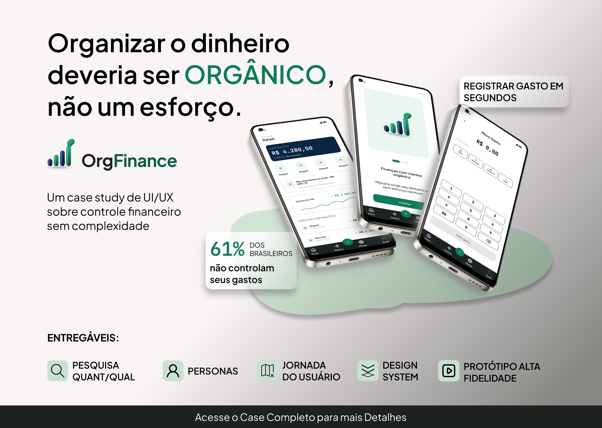

Product Design · Case completo
OrgFinance
App de finanças pessoais criado do zero para quem esquece de registrar os gastos e abandona apps complicados. Parti de survey e entrevistas, fiz benchmark e jornada, montei um design system e testei um protótipo funcional em HTML, CSS e JavaScript.
- 5 participantes na pesquisa
- 3 tarefas testadas
- 80% das tarefas em até 10 s